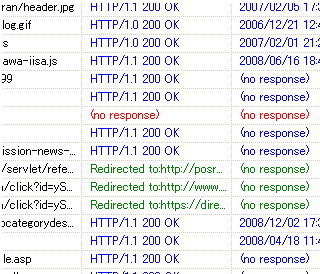

ブログのリンク切れとリダイレクトのSEO対策
ブログのSEO対策としては、リンク切れのチェックとリダイレクトあれこれのテリトリーがありますが、新年なので、すでに存在しなく、404が返ってくるような発リンクは削除しておいた方がぶなんなんじゃないかなって気がします。
リンク切れの無料チェックツール Website Explorer
リンク切れをいちいち確認するのも面倒くさいものなので、無料のチェックツールなんかを探してみましたが、Website Explorer というのがとても使いやすいです。
わたしは、リンク切れのチェックツールを違う目的で探していたのですが、本来の使い道は、サイトやブログの構造を探ったり、発リンクの切れているリンクを見つけたりするのに役立つようです。
インストールも簡単で、非常にお役立ちの無料ツールだと思います。サイトマップの作成もできたり、URLの書き出しをしてくれたりととてもおもしろいです。
自分のブログを自分でクロールしているような気分なんで、まるで検索エンジンになったような気分です。自分のURLを指定して開始ボタンをおせば、こんな感じでリンク切れをチェックしてくれます。

ただ、ブログのサーバーに負荷がかかったり、あるいはアドセンスなどのアフィリエイトタグを設置している場合、ツールによる表示は規約違反になる可能性もあるかと思います。
わたしは昨日の深夜に、ほかのブログでアドセンスタグをはずしてやってみたのですが、なるべくなら、アクセスの少ない時間にアドセンスタグをはずしてチェックしてみるといいと思います。
このブログでも今度やってみようと思います。
404とリダイレクトの発リンクSEO対策
リンク切れで404が返ってくるリンクは削除すればいいだけなので、何も問題ないと思いますが、SEO的に疑問があるのはリダイレクトされているページへの発リンクをどうするのかということだと思います。
リダイレクトするのはSEO的にはまずいっぽいんですが、それならば、やっぱまずいページに発リンクしているページもまずいページって感じになるのではないかと思うんです。
リダイレクトといっても、メタタグでのリダイレクトとか、アフィリエイトリンクのやつとかいろいろあると思うんです。
ブログランキングとか、おそらくはネームサーバー？ＤＮＳ？あたりで、wwwをつけないでのアクセスをリダイレクトするとか、そのへんもいろいろだと思います。
アフィリエイトブログの場合はSEO的にまずいようなのですが、検索エンジンがアフィリエイトブログを認識するのに、このリダイレクトがついているかいないかで判断しているとしたら、やはり、あまりにリダイレクトの発リンクがあるページはまずいと思うんです。
発リンクと内部リンクの割合とか、サイトテーマなどでアフィリエイトブログだってばれるとは思いますが、グーグルが教えてくれない以上は、ぶっちゃけのところ、誰にもわかんないと思うんです。
200 OKの発リンクがSEO的に好ましい
そんなこんなで、なるべくなら、全部のリンクを普通の発リンクにしたいって思うんです。
Website Explorerでチェックしたリンクは、上の画像でみると、赤いのが404、緑のがリダイレクトですが、アフィリエイトリンクの場合はほとんどすべてが緑色になってしまいます。
これを全て、「200 OK」の青いのにしたら、SEO的にもよさげな気がするんですが、どんなもんなんでしょうか。正直、全部の外部リンクを青くするのは無理だとしても、その割合を減らしていけばいい感じになるのではないかなという気がします。
少なくとも、404の赤くなっているリンク切れはまったくSEO的にはマイナスだと思うんで、修正してみるといいと思います。
- SEO的に効果のなさげな被リンク
最近ちょくちょくと目にするのですが、検索エンジンの登録先や相互リンク集に nofollow を使っているところを目にすることがあったりします。どのような感じで相互リンクしているのかな？と気になってみて... - ヤフーSEOでアクセスアップ大作戦
ヤフーSEOとしては、やはり Yahoo! 好みのブログの作り方をするべきなんじゃないかなって気がしますが、コンテンツ作成の際にはいくつかのポイントがあるようなんです。ヤフーのジオシティーズで「アクセ... - ブログ引越しのSEO対策
わたしのシーサーブログのなかで、時間をかけたもののアクセスしょぼしょぼのしょぼいブログがあるんですけど、独自ドメイン化したら少しでもアクセスアップになるかな？と思い、今日、新ドメインへブログの引越しを... - htaccess ファイルって何だろう？
ホームページ作成の際、.htaccess と robots.txt のファイル設定は基本的な設定事項としてよく出てきますが、両方ともなきゃないでもいいっぽい気もします。 .htaccess のファイ...